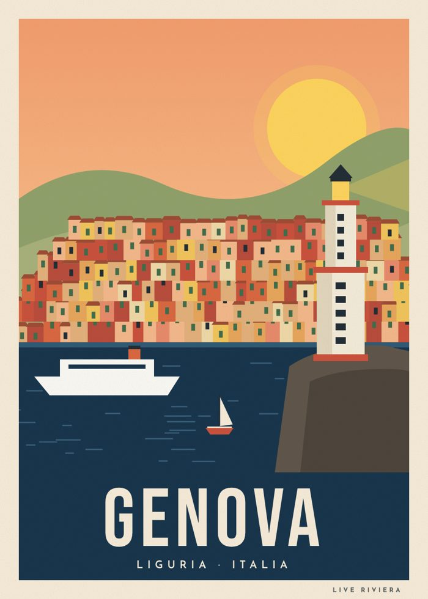
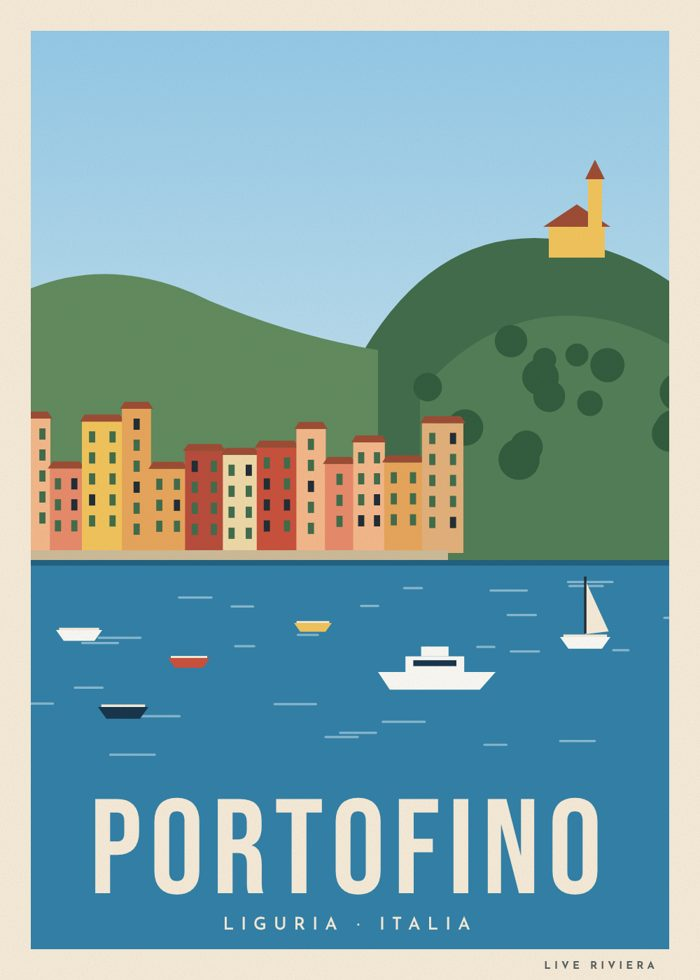
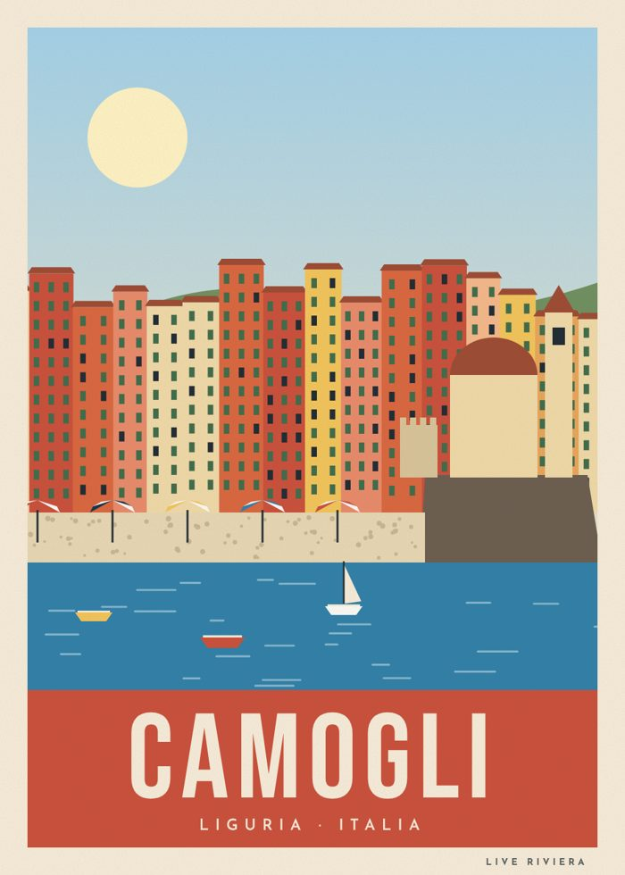
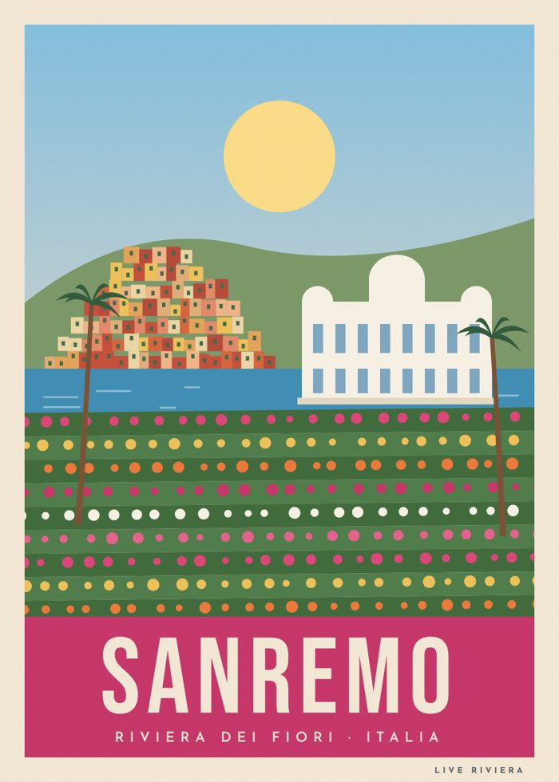
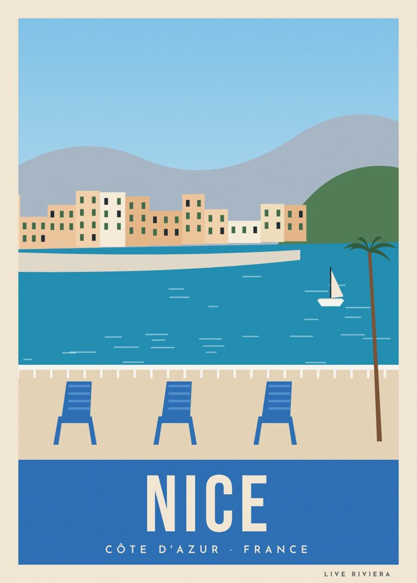
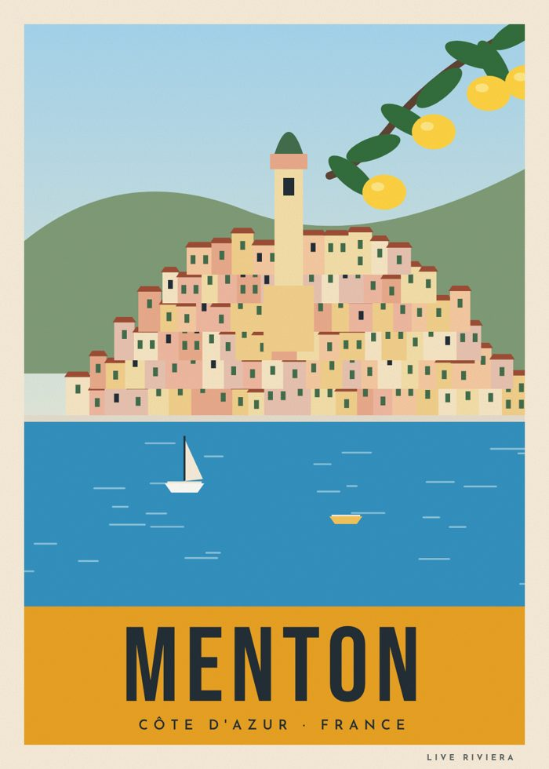
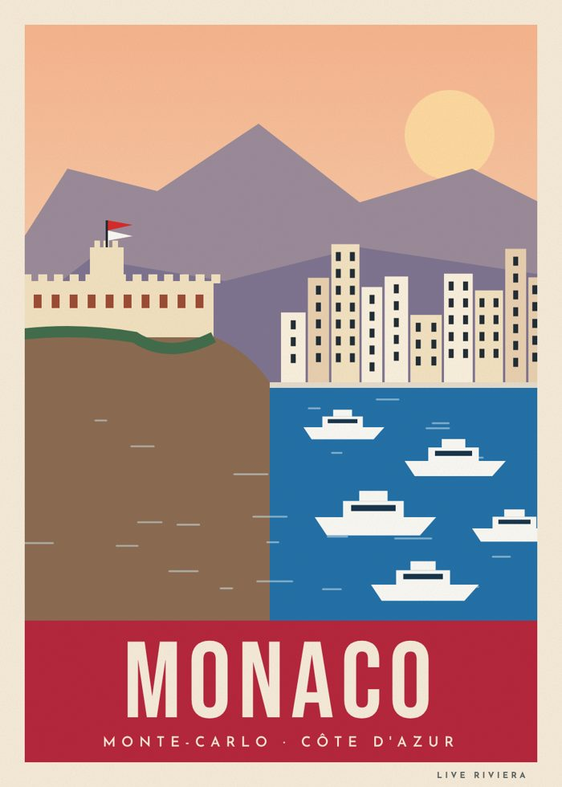

Prima serie di poster in stile vintage: quattro città della Liguria e tre della Costa Azzurra, tutte nello stesso stile per formare una collezione.







File di stampa vettoriali pronti per la tipografia.
Lo stesso disegno, stampato su tela o cotone.
Formati piccoli per il punto informazioni del B&B.